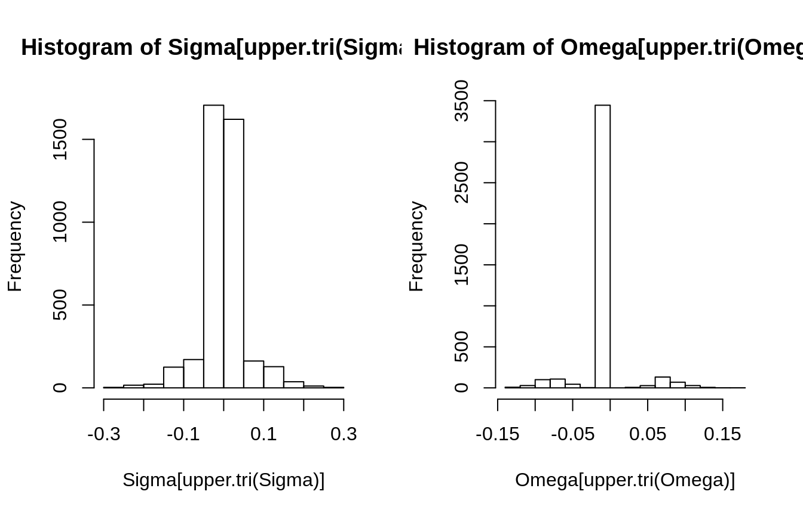

Generating Gaussian data from a Graphical Model with SBM structure
27 March, 2020
Source:vignettes/GGM_data_generation.Rmd
GGM_data_generation.RmdGenerating a graph under the stochastic bloc model
SBM parameters
We consider in the following an undirect network \(\mathcal{G}\) with 100 nodes splitted into 3 blocks with community-like connectivity:
Sampling under the SBM
The function rSBM sample a binary network under the SBM. Let us try the aformentioned set of parameters:
## Graph Sampling mySBM <- rSBM(nNodes, connectParam, blockProp) ## Graph plotting plot(mySBM, vertex.color = igraph::V(mySBM)$memberships)

Adding weights to the edges
In rggm, the user can add some random weights to the edges of an existing SBM. Those weigths are drawn under a predefined distribution (only “gaussian” and “poisson” are implemented at the moment) the parameters of which are defined blocwise
We consider for instance Gaussian weights in this piece of code:
## Sampling Gaussian weights mu_within <- 4 ; sigma_within <- .5 mu_between <- 2 ; sigma_between <- .5 theta <- list() theta$mu <- matrix(mu_between , nbBlock, nbBlock); diag(theta$mu) <- mu_within # means theta$sigma <- matrix(sigma_between, nbBlock, nbBlock); diag(theta$sigma) <- sigma_within # sd
Résultat convaincant
mySBM <- rWeightSBM(mySBM, "gaussian", theta) hist(igraph::E(mySBM)$weight, breaks = sqrt(igraph::gsize(mySBM)), freq = FALSE, xlab = "weights", main = "histogram of weights")

Drawing multivariate Gaussian observations faithful to a the graph
Consider the multivariate Gaussian model \[ X \sim \mathcal{N}(\mathbf{m}, \boldsymbol\Sigma), \qquad \text{with } \boldsymbol\Omega = \boldsymbol\Sigma^{-1} \text{ the precision matrix}. \]
We would like to drawn observation of the Gaussian vector \(X\) such that \(\boldsymbol\Omega\) has a sparsity pattern faithful to the orginal graph \(\mathcal{G}\) generated under the SBM.
Constructing the precision matrix and the variance-covariance
The function graph2prec allows one to build a precision matrix \(\boldsymbol\Omega\) faitful to the original graph, that is, with a sparsity pattern reflecting the graphical model of the SBM generated above. To this end, we rely on the Laplacian matrix which is set diagonal dominant by increasing iteratively its diagonal. Note that when the graph is weighted, the weighted Laplacian is used.
An optional argument allows to fix the conditional variance a priori1. This argument allows the user to indirectly tune the variances in the variance-covariance matrix \(\boldsymbol\Sigma\).
For instance, if we want to fix the conditional variances to 1 (a thus get variances all equal to 1),
Omega <- graph2prec(mySBM, cond_var = rep(1, gorder(mySBM)))
The variance-covariance \(\boldsymbol\Sigma\) is then obtain be inversion, since \(\boldsymbol\Omega\) is guaranted to be strictly positive-definite.
Sigma <- solve(Omega)
The corresponding matrices exhibit the expected strong blocwise, diagonal structure of the original affilitation graph.
par(mfrow = c(1,2)) corrplot(as.matrix(Omega), is.corr = FALSE, tl.pos = "n", method = 'color', type = "upper", diag = FALSE) corrplot(as.matrix(Sigma), is.corr = FALSE, tl.pos = "n", method = 'color', type = "upper", diag = FALSE)



conditional variances are equal to the inverse of the diagonal in a precision matrix↩